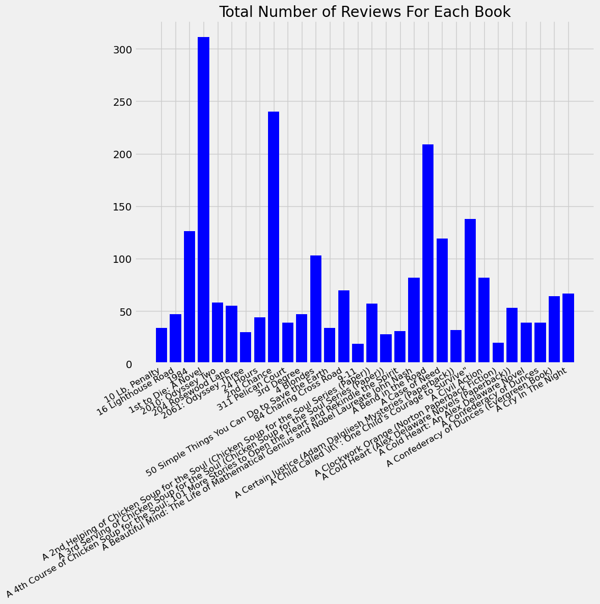
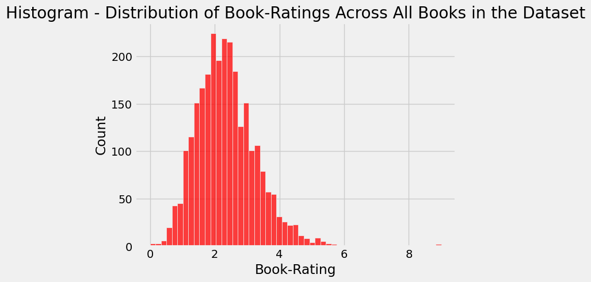

import numpy as np
import pandas as pd
import matplotlib.pyplot as plt
%matplotlib inline
import seaborn as sns
color = sns.color_palette()
from sklearn.model_selection import train_test_split
from sklearn.metrics import average_precision_score, roc_auc_score, precision_recall_fscore_support, confusion_matrix, classification_report
from sklearn.metrics import mean_squared_error
from tensorflow.keras.models import Model
from tensorflow.keras.layers import Input, Embedding, Flatten, dot
from tensorflow.keras.optimizers import Adam
plt.style.use("fivethirtyeight")Book Recommender System
Data Preprocessing - Cleaning and Analytics
# Reading and displaying all of the initial datasets
books_df = pd.read_csv("datasets/Books.csv")
ratings_df = pd.read_csv("datasets/Ratings.csv")
users_df = pd.read_csv("datasets/Users.csv")C:\Users\andre\AppData\Local\Temp\ipykernel_7572\2730945584.py:2: DtypeWarning: Columns (3) have mixed types. Specify dtype option on import or set low_memory=False.
books_df = pd.read_csv("datasets/Books.csv")# Determining the shape of each of the initial datasets
books_df.shape, ratings_df.shape, users_df.shape((271360, 8), (1149780, 3), (278858, 3))# Getting a sample of each of the initial datasets through the seeing the
# first 10 entries completely in each dataset
books_df.info(), ratings_df.info(), users_df.info()<class 'pandas.core.frame.DataFrame'>
RangeIndex: 271360 entries, 0 to 271359
Data columns (total 8 columns):
# Column Non-Null Count Dtype
--- ------ -------------- -----
0 ISBN 271360 non-null object
1 Book-Title 271360 non-null object
2 Book-Author 271359 non-null object
3 Year-Of-Publication 271360 non-null object
4 Publisher 271358 non-null object
5 Image-URL-S 271360 non-null object
6 Image-URL-M 271360 non-null object
7 Image-URL-L 271357 non-null object
dtypes: object(8)
memory usage: 16.6+ MB
<class 'pandas.core.frame.DataFrame'>
RangeIndex: 1149780 entries, 0 to 1149779
Data columns (total 3 columns):
# Column Non-Null Count Dtype
--- ------ -------------- -----
0 User-ID 1149780 non-null int64
1 ISBN 1149780 non-null object
2 Book-Rating 1149780 non-null int64
dtypes: int64(2), object(1)
memory usage: 26.3+ MB
<class 'pandas.core.frame.DataFrame'>
RangeIndex: 278858 entries, 0 to 278857
Data columns (total 3 columns):
# Column Non-Null Count Dtype
--- ------ -------------- -----
0 User-ID 278858 non-null int64
1 Location 278858 non-null object
2 Age 168096 non-null float64
dtypes: float64(1), int64(1), object(1)
memory usage: 6.4+ MB(None, None, None)# Seeing each of the dataframes individually
books_df| ISBN | Book-Title | Book-Author | Year-Of-Publication | Publisher | Image-URL-S | Image-URL-M | Image-URL-L | |
|---|---|---|---|---|---|---|---|---|
| 0 | 0195153448 | Classical Mythology | Mark P. O. Morford | 2002 | Oxford University Press | http://images.amazon.com/images/P/0195153448.0... | http://images.amazon.com/images/P/0195153448.0... | http://images.amazon.com/images/P/0195153448.0... |
| 1 | 0002005018 | Clara Callan | Richard Bruce Wright | 2001 | HarperFlamingo Canada | http://images.amazon.com/images/P/0002005018.0... | http://images.amazon.com/images/P/0002005018.0... | http://images.amazon.com/images/P/0002005018.0... |
| 2 | 0060973129 | Decision in Normandy | Carlo D'Este | 1991 | HarperPerennial | http://images.amazon.com/images/P/0060973129.0... | http://images.amazon.com/images/P/0060973129.0... | http://images.amazon.com/images/P/0060973129.0... |
| 3 | 0374157065 | Flu: The Story of the Great Influenza Pandemic... | Gina Bari Kolata | 1999 | Farrar Straus Giroux | http://images.amazon.com/images/P/0374157065.0... | http://images.amazon.com/images/P/0374157065.0... | http://images.amazon.com/images/P/0374157065.0... |
| 4 | 0393045218 | The Mummies of Urumchi | E. J. W. Barber | 1999 | W. W. Norton & Company | http://images.amazon.com/images/P/0393045218.0... | http://images.amazon.com/images/P/0393045218.0... | http://images.amazon.com/images/P/0393045218.0... |
| ... | ... | ... | ... | ... | ... | ... | ... | ... |
| 271355 | 0440400988 | There's a Bat in Bunk Five | Paula Danziger | 1988 | Random House Childrens Pub (Mm) | http://images.amazon.com/images/P/0440400988.0... | http://images.amazon.com/images/P/0440400988.0... | http://images.amazon.com/images/P/0440400988.0... |
| 271356 | 0525447644 | From One to One Hundred | Teri Sloat | 1991 | Dutton Books | http://images.amazon.com/images/P/0525447644.0... | http://images.amazon.com/images/P/0525447644.0... | http://images.amazon.com/images/P/0525447644.0... |
| 271357 | 006008667X | Lily Dale : The True Story of the Town that Ta... | Christine Wicker | 2004 | HarperSanFrancisco | http://images.amazon.com/images/P/006008667X.0... | http://images.amazon.com/images/P/006008667X.0... | http://images.amazon.com/images/P/006008667X.0... |
| 271358 | 0192126040 | Republic (World's Classics) | Plato | 1996 | Oxford University Press | http://images.amazon.com/images/P/0192126040.0... | http://images.amazon.com/images/P/0192126040.0... | http://images.amazon.com/images/P/0192126040.0... |
| 271359 | 0767409752 | A Guided Tour of Rene Descartes' Meditations o... | Christopher Biffle | 2000 | McGraw-Hill Humanities/Social Sciences/Languages | http://images.amazon.com/images/P/0767409752.0... | http://images.amazon.com/images/P/0767409752.0... | http://images.amazon.com/images/P/0767409752.0... |
271360 rows × 8 columns
ratings_df| User-ID | ISBN | Book-Rating | |
|---|---|---|---|
| 0 | 276725 | 034545104X | 0 |
| 1 | 276726 | 0155061224 | 5 |
| 2 | 276727 | 0446520802 | 0 |
| 3 | 276729 | 052165615X | 3 |
| 4 | 276729 | 0521795028 | 6 |
| ... | ... | ... | ... |
| 1149775 | 276704 | 1563526298 | 9 |
| 1149776 | 276706 | 0679447156 | 0 |
| 1149777 | 276709 | 0515107662 | 10 |
| 1149778 | 276721 | 0590442449 | 10 |
| 1149779 | 276723 | 05162443314 | 8 |
1149780 rows × 3 columns
users_df| User-ID | Location | Age | |
|---|---|---|---|
| 0 | 1 | nyc, new york, usa | NaN |
| 1 | 2 | stockton, california, usa | 18.0 |
| 2 | 3 | moscow, yukon territory, russia | NaN |
| 3 | 4 | porto, v.n.gaia, portugal | 17.0 |
| 4 | 5 | farnborough, hants, united kingdom | NaN |
| ... | ... | ... | ... |
| 278853 | 278854 | portland, oregon, usa | NaN |
| 278854 | 278855 | tacoma, washington, united kingdom | 50.0 |
| 278855 | 278856 | brampton, ontario, canada | NaN |
| 278856 | 278857 | knoxville, tennessee, usa | NaN |
| 278857 | 278858 | dublin, n/a, ireland | NaN |
278858 rows × 3 columns
# Remove unnecessary columns (before merging)
books_df.drop(columns=["Image-URL-S", "Image-URL-M", "Image-URL-L"], axis=1, inplace=True)
books_df| ISBN | Book-Title | Book-Author | Year-Of-Publication | Publisher | |
|---|---|---|---|---|---|
| 0 | 0195153448 | Classical Mythology | Mark P. O. Morford | 2002 | Oxford University Press |
| 1 | 0002005018 | Clara Callan | Richard Bruce Wright | 2001 | HarperFlamingo Canada |
| 2 | 0060973129 | Decision in Normandy | Carlo D'Este | 1991 | HarperPerennial |
| 3 | 0374157065 | Flu: The Story of the Great Influenza Pandemic... | Gina Bari Kolata | 1999 | Farrar Straus Giroux |
| 4 | 0393045218 | The Mummies of Urumchi | E. J. W. Barber | 1999 | W. W. Norton & Company |
| ... | ... | ... | ... | ... | ... |
| 271355 | 0440400988 | There's a Bat in Bunk Five | Paula Danziger | 1988 | Random House Childrens Pub (Mm) |
| 271356 | 0525447644 | From One to One Hundred | Teri Sloat | 1991 | Dutton Books |
| 271357 | 006008667X | Lily Dale : The True Story of the Town that Ta... | Christine Wicker | 2004 | HarperSanFrancisco |
| 271358 | 0192126040 | Republic (World's Classics) | Plato | 1996 | Oxford University Press |
| 271359 | 0767409752 | A Guided Tour of Rene Descartes' Meditations o... | Christopher Biffle | 2000 | McGraw-Hill Humanities/Social Sciences/Languages |
271360 rows × 5 columns
# Merge the books and ratings dataframes to have one, inclusive dataframe
# with all book, user, and rating information
df = pd.merge(books_df, ratings_df, on="ISBN")
df| ISBN | Book-Title | Book-Author | Year-Of-Publication | Publisher | User-ID | Book-Rating | |
|---|---|---|---|---|---|---|---|
| 0 | 0195153448 | Classical Mythology | Mark P. O. Morford | 2002 | Oxford University Press | 2 | 0 |
| 1 | 0002005018 | Clara Callan | Richard Bruce Wright | 2001 | HarperFlamingo Canada | 8 | 5 |
| 2 | 0002005018 | Clara Callan | Richard Bruce Wright | 2001 | HarperFlamingo Canada | 11400 | 0 |
| 3 | 0002005018 | Clara Callan | Richard Bruce Wright | 2001 | HarperFlamingo Canada | 11676 | 8 |
| 4 | 0002005018 | Clara Callan | Richard Bruce Wright | 2001 | HarperFlamingo Canada | 41385 | 0 |
| ... | ... | ... | ... | ... | ... | ... | ... |
| 1031131 | 0440400988 | There's a Bat in Bunk Five | Paula Danziger | 1988 | Random House Childrens Pub (Mm) | 276463 | 7 |
| 1031132 | 0525447644 | From One to One Hundred | Teri Sloat | 1991 | Dutton Books | 276579 | 4 |
| 1031133 | 006008667X | Lily Dale : The True Story of the Town that Ta... | Christine Wicker | 2004 | HarperSanFrancisco | 276680 | 0 |
| 1031134 | 0192126040 | Republic (World's Classics) | Plato | 1996 | Oxford University Press | 276680 | 0 |
| 1031135 | 0767409752 | A Guided Tour of Rene Descartes' Meditations o... | Christopher Biffle | 2000 | McGraw-Hill Humanities/Social Sciences/Languages | 276680 | 0 |
1031136 rows × 7 columns
# Figuring out the number of duplicated elements in the dataset
# (could be problematic if not resolved)
df.duplicated().sum()0# Figuring out the number of 'null'/'NaN' elements in the dataset
# (if NaN filling is needed or not)
(df.isnull().sum() / df.shape[0]) * 100ISBN 0.000000
Book-Title 0.000000
Book-Author 0.000097
Year-Of-Publication 0.000000
Publisher 0.000194
User-ID 0.000000
Book-Rating 0.000000
dtype: float64# Fill unknown and unformatted values with proper ones for readability and to
# improve data accuracy and relevance
# Change types of columns to allow an easier time to parse
df["Year-Of-Publication"] = df["Year-Of-Publication"].astype(str)
df["Year-Of-Publication"] = df["Year-Of-Publication"].map(lambda entry: entry if entry.isnumeric() else df["Year-Of-Publication"].mode()[0])
df["Year-Of-Publication"] = df["Year-Of-Publication"].astype("int64")
df["Book-Author"].fillna("N/A", inplace=True)
df["Publisher"].fillna("N/A", inplace=True)
df["Book-Title"] = df["Book-Title"].astype(str)
df["Book-Author"] = df["Book-Author"].astype(str)
df["ISBN"] = df["ISBN"].astype(str)
df["Publisher"] = df["Publisher"].astype(str)
# Getting basic information about the dataset
df.info()<class 'pandas.core.frame.DataFrame'>
Int64Index: 1031136 entries, 0 to 1031135
Data columns (total 7 columns):
# Column Non-Null Count Dtype
--- ------ -------------- -----
0 ISBN 1031136 non-null object
1 Book-Title 1031136 non-null object
2 Book-Author 1031136 non-null object
3 Year-Of-Publication 1031136 non-null int64
4 Publisher 1031136 non-null object
5 User-ID 1031136 non-null int64
6 Book-Rating 1031136 non-null int64
dtypes: int64(3), object(4)
memory usage: 62.9+ MBdef report_basic_stats(dataframe: pd.DataFrame, type: str):
global n_users, n_books
n_users = dataframe["User-ID"].unique().shape[0]
n_books = dataframe["ISBN"].unique().shape[0]
n_ratings = len(dataframe["Book-Rating"])
avg_num_ratings_per_user = n_ratings / n_users
print("Number of Unique Book Users in This Dataset ({}):".format(type), n_users)
print("Number of Unique Book Titles / ISBNs in This Dataset ({}):".format(type), n_books)
print("Number of Total Ratings in This Dataset ({}):".format(type), n_ratings)
print("Average Number of Book Ratings per User in This Dataset ({}):".format(type), round(avg_num_ratings_per_user, 3))report_basic_stats(df, "Regular")Number of Unique Book Users in This Dataset (Regular): 92106
Number of Unique Book Titles / ISBNs in This Dataset (Regular): 270151
Number of Total Ratings in This Dataset (Regular): 1031136
Average Number of Book Ratings per User in This Dataset (Regular): 11.195# Filter the first 3000 Book-ISBNs in Dataset (keeps the data from
# becoming too long to visualize and compute within the ML model)
book_isbn_index = df.groupby("ISBN").count().sort_values(by="Book-Rating", ascending=False)[0:3000].index
df2 = df[df["ISBN"].isin(book_isbn_index)]
df2.count()ISBN 271456
Book-Title 271456
Book-Author 271456
Year-Of-Publication 271456
Publisher 271456
User-ID 271456
Book-Rating 271456
dtype: int64# Filter the first 3000 Book-Users in Dataset (keeps the data from
# becoming too long to visualize and compute within the ML model)
book_users_index = df2.groupby("User-ID").count().sort_values(by="Book-Rating", ascending=False)[0:3000].index
df3 = df2[df2["User-ID"].isin(book_users_index)]
df3.count()ISBN 172071
Book-Title 172071
Book-Author 172071
Year-Of-Publication 172071
Publisher 172071
User-ID 172071
Book-Rating 172071
dtype: int64# Make a separate dataframe for unique Book-ISBNs
book_isbns = df3["ISBN"].unique()
isbn_df = pd.DataFrame(data=book_isbns, columns=["Original-ISBN"])
isbn_df["New-ISBN"] = isbn_df.index + 1# Make a separate dataframe for unique Book-Users (indicated by their IDs)
book_users = df3["User-ID"].unique()
users_df = pd.DataFrame(data=book_users, columns=["Original-User-ID"])
users_df["New-User-ID"] = users_df.index + 1# Merge in new indices for Book-ISBN and Book-User-IDs that are modified
# from 1 to 3000 (accounts for scaling down of data)
cleaned_df = df3.merge(isbn_df, left_on="ISBN", right_on="Original-ISBN")
cleaned_df.drop(columns=["Original-ISBN"], axis=1, inplace=True)
cleaned_df = cleaned_df.merge(users_df, left_on="User-ID", right_on="Original-User-ID")
cleaned_df.drop(columns=["Original-User-ID"], axis=1, inplace=True)
cleaned_df| ISBN | Book-Title | Book-Author | Year-Of-Publication | Publisher | User-ID | Book-Rating | New-ISBN | New-User-ID | |
|---|---|---|---|---|---|---|---|---|---|
| 0 | 0440234743 | The Testament | John Grisham | 1999 | Dell | 277478 | 0 | 1 | 1 |
| 1 | 0971880107 | Wild Animus | Rich Shapero | 2004 | Too Far | 277478 | 0 | 3 | 1 |
| 2 | 0671888587 | I'll Be Seeing You | Mary Higgins Clark | 1994 | 277478 | 0 | 9 | 1 | |
| 3 | 0440225701 | The Street Lawyer | JOHN GRISHAM | 1999 | Dell | 277478 | 0 | 15 | 1 |
| 4 | 0786868716 | The Five People You Meet in Heaven | Mitch Albom | 2003 | Hyperion | 277478 | 0 | 30 | 1 |
| ... | ... | ... | ... | ... | ... | ... | ... | ... | ... |
| 172066 | 0767908171 | A Short History of Nearly Everything | Bill Bryson | 2003 | Broadway | 70999 | 0 | 2798 | 3000 |
| 172067 | 0385234104 | Fatherhood | Bill Cosby | 1986 | Bantam Dell Pub Group | 70999 | 0 | 2857 | 3000 |
| 172068 | 0425190641 | Fire Ice: A Novel from the Numa Files (Kurt Au... | Clive Cussler | 2003 | Berkley Publishing Group | 70999 | 0 | 2874 | 3000 |
| 172069 | 0553584375 | No One to Trust | IRIS JOHANSEN | 2003 | Bantam | 70999 | 0 | 2880 | 3000 |
| 172070 | 044023512X | City of Light | Lauren Belfer | 2000 | Island | 70999 | 0 | 2941 | 3000 |
172071 rows × 9 columns
cleaned_df_condensed_trends = cleaned_df.copy()
cleaned_df_condensed_trends.drop(labels=["ISBN",
"Book-Author",
"Year-Of-Publication",
"Publisher",
"User-ID",
"New-ISBN",
"New-User-ID"], axis=1, inplace=True)
cleaned_df_condensed_trends_copy = cleaned_df_condensed_trends.copy()
cleaned_df_condensed_trends = pd.DataFrame(cleaned_df_condensed_trends_copy
.groupby("Book-Title")["Book-Rating"]
.mean())
cleaned_df_condensed_trends["Total-Num-Of-Ratings"] = pd.DataFrame(cleaned_df_condensed_trends_copy
.groupby("Book-Title")["Book-Rating"]
.count())
cleaned_df_condensed_trends.head()| Book-Rating | Total-Num-Of-Ratings | |
|---|---|---|
| Book-Title | ||
| 10 Lb. Penalty | 1.911765 | 34 |
| 16 Lighthouse Road | 1.276596 | 47 |
| 1984 | 3.817460 | 126 |
| 1st to Die: A Novel | 2.893891 | 311 |
| 2010: Odyssey Two | 2.086207 | 58 |
# Creating a bar graph describing number of reviews for first 30 books
plt.figure(figsize=(10, 8))
ax=plt.subplot()
ax.bar(cleaned_df_condensed_trends.head(30).index,
cleaned_df_condensed_trends["Total-Num-Of-Ratings"].head(30),
color="b")
ax.set_xticklabels(cleaned_df_condensed_trends.index,
rotation=30,
fontsize="12",
horizontalalignment="right")
ax.set_title("Total Number of Reviews For Each Book")
plt.show()C:\Users\andre\AppData\Local\Temp\ipykernel_7572\177655821.py:7: UserWarning: FixedFormatter should only be used together with FixedLocator
ax.set_xticklabels(cleaned_df_condensed_trends.index,
# Calculate mean rating of all movies
# Check the popular, high-rating books (top-50) and unpopular, low-rating books (bottom-50)
cleaned_df_sorted_mean_rating = cleaned_df.copy().groupby("Book-Title")["Book-Rating"].mean().sort_values(ascending=False)
print("--------- Sorted by Mean On Average: ---------\n")
print("--------- TOP 50: ---------\n", cleaned_df_sorted_mean_rating.head(50), "\n\n--------- BOTTOM 50: ---------\n", cleaned_df_sorted_mean_rating.tail(50))--------- Sorted by Mean On Average: ---------
--------- TOP 50: ---------
Book-Title
Generation Golf. Eine Inspektion 9.000000
Novocento, Un Monologo 9.000000
Io Non Ho Paura 8.000000
Herr Lehmann. 7.500000
L'Etranger (Collection Folio, 2) 6.777778
Griffin & Sabine: An Extraordinary Correspondence 6.000000
The Darwin Awards: Evolution in Action 5.653846
Harry Potter and the Sorcerer's Stone (Book 1) 5.651613
My Sister's Keeper : A Novel (Picoult, Jodi) 5.515152
Harry Potter and the Prisoner of Azkaban (Book 3) 5.465116
Harry Potter and the Goblet of Fire (Book 4) 5.445415
The Stand (The Complete and Uncut Edition) 5.433333
Balzac and the Little Chinese Seamstress 5.379310
Harry Potter and the Chamber of Secrets Postcard Book 5.363636
The Lone Ranger and Tonto Fistfight in Heaven 5.333333
Harry Potter and the Order of the Phoenix (Book 5) 5.277228
Hamlet 5.241379
The Lunatic Cafe (Anita Blake Vampire Hunter (Paperback)) 5.230769
The Little Prince 5.210526
Wiener Dog Art 5.157895
Weirdos From Another Planet! 5.147059
Killing Dance (Anita Blake Vampire Hunter (Paperback)) 5.142857
The Secret Garden 5.133333
Wicca: A Guide for the Solitary Practitioner 5.120000
Sabine's Notebook: In Which the Extraordinary Correspondence of Griffin & Sabine Continues 5.105263
The Metamorphosis (Bantam Classics) 5.062500
The Grapes of Wrath (20th Century Classics) 5.031250
The Lion, the Witch, and the Wardrobe (The Chronicles of Narnia, Book 2) 4.978723
Green Eggs and Ham (I Can Read It All by Myself Beginner Books) 4.931034
Harry Potter and the Chamber of Secrets (Book 2) 4.924092
The Cat in the Hat 4.903226
GREAT GATSBY (REISSUE) 4.800000
Ender's Game (Ender Wiggins Saga (Paperback)) 4.793478
The Vagina Monologues: The V-Day Edition 4.793103
The Godfather 4.783784
All I Need to Know I Learned from My Cat 4.769231
Hyperion 4.764706
Sister of My Heart 4.743590
Sense and Sensibility (Penguin Popular Classics) 4.733333
On the Banks of Plum Creek 4.718750
Rich Dad, Poor Dad: What the Rich Teach Their Kids About Money--That the Poor and Middle Class Do Not! 4.717949
The Lord of the Rings (Movie Art Cover) 4.714286
Needful Things: The Last Castle Rock Story 4.681818
The Jungle (Bantam Classics) 4.652174
Memoirs of a Geisha 4.638298
Pride & Prejudice (Wordsworth Classics) 4.631579
The Spirit Catches You and You Fall Down 4.600000
Anthem 4.590909
JITTERBUG PERFUME 4.571429
The Curious Incident of the Dog in the Night-Time (Vintage Contemporaries) 4.571429
Name: Book-Rating, dtype: float64
--------- BOTTOM 50: ---------
Book-Title
Silent Honor 0.735294
Vernon God Little: A 21st Century Comedy in the Presence of Death 0.727273
Ruthless.Com (Tom Clancy's Power Plays (Paperback)) 0.725806
The Blooding 0.722222
Where You Belong 0.720930
The Matarese Countdown 0.717949
Pleading Guilty 0.716049
Family Pictures 0.714286
Fortune's Hand 0.708333
Passion's Promise 0.705882
Ssn 0.700000
The Icarus Agenda 0.700000
Legacy of Silence 0.696970
Confessions of a Sociopathic Social Climber : The Katya Livingston Chronicles (Katya Livingston Chronicles (Hardcover)) 0.695652
The Blue Last: A Richard Jury Mystery (Richard Jury Mysteries (Paperback)) 0.695652
Subterranean 0.695652
The Legend of Bagger Vance 0.692308
State of Siege (Tom Clancy's Op-Center, 6) 0.680851
Man From St Petersburg 0.659091
Master of the Game 0.658537
Rosehaven 0.656250
The X-Files: Goblins 0.640000
Welcome to Dead House (Goosebumps, No 1) 0.638889
Ground Zero and Beyond 0.629032
Los Alamos: A Novel 0.620690
Treasures 0.617647
Whirlwind 0.606061
If Tomorrow Comes 0.605263
WEB OF DREAMS (Casteel Saga (Paperback)) 0.604651
Starting Over 0.600000
Hurricane Bay 0.600000
Montana 0.595238
Wild Animus 0.582865
People of the River (The First North Americans series, Book 4) 0.571429
Honor Among Thieves 0.568182
The Cat Who Went into the Closet 0.566038
After the Fire 0.564103
Yesterday 0.531250
Monster Blood (Goosebumps, No 3) 0.466667
Women in His Life 0.452381
Long, Lean, and Lethal 0.451613
Dating Game 0.400000
Billy Straight: A Novel 0.375000
McNally's Luck (Archy McNally Novels (Paperback)) 0.365854
Final Flight 0.333333
Stay Out of the Basement (Goosebumps, No 2) 0.285714
Say Cheese and Die! (Goosebumps, No 4) 0.275862
Long Time No See 0.161290
The Sculptress 0.000000
Der Vorleser 0.000000
Name: Book-Rating, dtype: float64sns.histplot(pd.DataFrame(cleaned_df_sorted_mean_rating)["Book-Rating"], color="r")
plt.title("Histogram - Distribution of Book-Ratings Across All Books in the Dataset")
plt.show()
report_basic_stats(cleaned_df, "Reduced")Number of Unique Book Users in This Dataset (Reduced): 3000
Number of Unique Book Titles / ISBNs in This Dataset (Reduced): 3000
Number of Total Ratings in This Dataset (Reduced): 172071
Average Number of Book Ratings per User in This Dataset (Reduced): 57.357Machine Learning - Model Training and Evaluation
# Configuring the ML Tensorflow Model by splitting the data 90% for testing,
# 5% for validation, and 5% for testing
X_train, X_test = train_test_split(cleaned_df, test_size=0.10, shuffle=True, random_state=2018)
X_val, X_test = train_test_split(X_test, test_size=0.50, shuffle=True, random_state=2018)# Outputting the shape of the new datasets
print("Shape of Training Set:", X_train.shape, "and Size of Training Set:", X_train.size)
print("Shape of Validation Set:", X_val.shape, "and Size of Validation Set:", X_val.size)
print("Shape of Test Set:", X_test.shape, "and Size of Testing Set:", X_test.size)Shape of Training Set: (154863, 9) and Size of Training Set: 1393767
Shape of Validation Set: (8604, 9) and Size of Validation Set: 77436
Shape of Test Set: (8604, 9) and Size of Testing Set: 77436X_train| ISBN | Book-Title | Book-Author | Year-Of-Publication | Publisher | User-ID | Book-Rating | New-ISBN | New-User-ID | |
|---|---|---|---|---|---|---|---|---|---|
| 159718 | 0515111279 | The Cat Who Wasn't There | Lilian Jackson Braun | 1994 | Jove Books | 254899 | 0 | 548 | 2474 |
| 33289 | 068480087X | POSTCARDS | Annie Proulx | 1994 | Scribner | 273979 | 0 | 1043 | 235 |
| 47405 | 0451176464 | Gerald's Game | Stephen King | 2001 | Signet Book | 31826 | 10 | 1517 | 393 |
| 86465 | 0871136791 | Cold Mountain | Charles Frazier | 1997 | Atlantic Monthly Press | 55548 | 0 | 1186 | 949 |
| 130007 | 0553279378 | I Know Why the Caged Bird Sings | MAYA ANGELOU | 1983 | Bantam | 275922 | 7 | 1380 | 1646 |
| ... | ... | ... | ... | ... | ... | ... | ... | ... | ... |
| 115605 | 0679751602 | Mama Makes Up Her Mind: And Other Dangers of S... | Bailey White | 1994 | Vintage Books USA | 8067 | 0 | 803 | 1383 |
| 84745 | 0316284955 | White Oleander : A Novel (Oprah's Book Club) | Janet Fitch | 2000 | Back Bay Books | 266865 | 9 | 957 | 924 |
| 80098 | 0446608955 | A Walk to Remember | Nicholas Sparks | 2000 | Warner Books | 236283 | 10 | 1164 | 846 |
| 60006 | 0446532452 | The Wedding | Nicholas Sparks | 2003 | Warner Books | 103811 | 0 | 1656 | 563 |
| 107770 | 0804114609 | Patty Jane's House of Curl | Lorna Landvik | 1999 | Ivy Books | 220240 | 0 | 1426 | 1249 |
154863 rows × 9 columns
# Define my cost function (mean-squared error) for each dataset before the
# invokation of the ML algorithm
df_ratings_train = np.zeros((n_users, n_books))
for r in X_train.itertuples():
df_ratings_train[r[9] - 1, r[8] - 1] = r[7]
df_ratings_trainarray([[0., 0., 0., ..., 0., 0., 0.],
[0., 0., 0., ..., 0., 0., 0.],
[0., 0., 0., ..., 0., 0., 0.],
...,
[0., 0., 0., ..., 0., 0., 0.],
[0., 0., 0., ..., 0., 0., 0.],
[0., 0., 0., ..., 0., 0., 0.]])df_ratings_validation = np.zeros((n_users, n_books))
for r in X_val.itertuples():
df_ratings_validation[r[9] - 1, r[8] - 1] = r[7]
print(df_ratings_validation.shape)
df_ratings_validation(3000, 3000)array([[0., 0., 0., ..., 0., 0., 0.],
[0., 0., 0., ..., 0., 0., 0.],
[0., 0., 0., ..., 0., 0., 0.],
...,
[0., 0., 0., ..., 0., 0., 0.],
[0., 0., 0., ..., 0., 0., 0.],
[0., 0., 0., ..., 0., 0., 0.]])df_ratings_test = np.zeros((n_users, n_books))
for r in X_test.itertuples():
df_ratings_test[r[9] - 1, r[8] - 1] = r[7]
df_ratings_testarray([[0., 0., 0., ..., 0., 0., 0.],
[0., 0., 0., ..., 0., 0., 0.],
[0., 0., 0., ..., 0., 0., 0.],
...,
[0., 0., 0., ..., 0., 0., 0.],
[0., 0., 0., ..., 0., 0., 0.],
[0., 0., 0., ..., 0., 0., 0.]])def print_sparsity_stats(df: pd.DataFrame, type: str):
print("-------------- Sparsity Stats for {}: --------------".format(type))
df_sparsity = float(len(df.nonzero()[0]))
df_sparsity /= (df.shape[0] * df.shape[1])
df_sparsity *= 100
print('Sparsity: {:4.2f}%'.format(df_sparsity))print_sparsity_stats(df_ratings_train, "Train")
print_sparsity_stats(df_ratings_validation, "Validation")
print_sparsity_stats(df_ratings_test, "Test")-------------- Sparsity Stats for Train: --------------
Sparsity: 0.53%
-------------- Sparsity Stats for Validation: --------------
Sparsity: 0.03%
-------------- Sparsity Stats for Test: --------------
Sparsity: 0.03%actual_validation = X_val[df_ratings_validation.nonzero()].flatten()
pred_validation = df_ratings_validation[df_ratings_validation.nonzero()].flatten()
# print(actual_validation.shape, pred_validation.shape)
# Fill the empty values with the mean (match size)
# TODO: -------
# pred_validation = np.zeros((len(X_val),1))
# pred_validation[pred_validation==1] = 3.5
# print(pred_validation)
# print("Mean Squared Error is : ", mean_squared_error(pred_validation, actual_validation))InvalidIndexError: (array([ 3, 4, 5, ..., 2977, 2995, 2997], dtype=int64), array([ 123, 2332, 46, ..., 2279, 594, 2935], dtype=int64))#
n_latent_fact = 1
user_input = Input(shape=[1], name="User")
user_embedding = Embedding(input_dim=n_users + 1,
output_dim=n_latent_fact,
name="User_Embedding")(user_input)
user_vec = Flatten(name="Flatten_Users")(user_embedding)
book_input = Input(shape=[1], name="Book")
book_embedding = Embedding(input_dim=n_books + 1,
output_dim=n_latent_fact,
name="Book_Embedding")(book_input)
book_vec = Flatten(name="Flatten_Movies")(book_embedding)
dot_product = dot([book_vec, user_vec], axes=1)
model = Model(inputs=[user_input, book_input], outputs=dot_product)
model.compile(loss="mse",
optimizer=Adam(learning_rate=0.0001),
metrics=["mean_absolute_error"])
book_rec_history = model.fit(x=(X_train["New-User-ID"], X_train["New-ISBN"]),
y=X_train["Book-Rating"],
epochs=150,
validation_data=([X_val["New-User-ID"], X_val["New-ISBN"]], X_val["Book-Rating"]),
use_multiprocessing=True)pd.Series(book_rec_history.history["val_loss"][15:]).plot(logy=False, color="gold")
plt.xlabel("Epoch")
plt.ylabel("Validation Error")
plt.show()
print("Minimum MSE:", min(book_rec_history.history["val_loss"]))# NOTE: MAY REMOVE
book_users_interaction_matrix = np.random.randint(0, 2, size=[n_users, n_books])
sns.heatmap(book_users_interaction_matrix, cmap="viridis")
plt.title("Book User-Item Interaction HeatMap")
plt.show()predicted_ratings = model.predict(x=(X_test["New-User-ID"], X_test["New-ISBN"])).flatten()book_rec_history_model_loss, book_rec_history_model_accuracy = model.evaluate(x=(X_test["New-User-ID"], X_test["New-ISBN"]), y=X_test["Book-Rating"])
book_rec_history_model_accuracy /= 10
# Threshold the predicted ratings to binary recommendations (e.g., using a threshold of >= 5 for recommending book)
threshold = 5
predicted_labels_bin_classify = (predicted_ratings.copy() >= threshold).astype(int)
actual_labels_bin_classify = (X_test["Book-Rating"].copy() >= threshold).astype(int)
actual_ratings_str = predicted_labels_bin_classify.copy().astype(int)
predicted_ratings_str = actual_labels_bin_classify.copy().astype(int)
clf_report = pd.DataFrame(classification_report(y_true=actual_ratings_str, y_pred=predicted_ratings_str, output_dict=True, zero_division=0))
y_test_book_rating = predicted_labels_bin_classify
y_pred_book_rating = actual_labels_bin_classify
print("Train Result:\n================================================")
print(f"Lost Score (When Compared to Test Set): {book_rec_history_model_loss:.4f}")
print("_______________________________________________")
print(f"Average Precision Score (When Compared to Test Set): {average_precision_score(y_true=actual_labels_bin_classify, y_score=predicted_labels_bin_classify):.4f}")
print("_______________________________________________")
print(f"Accuracy Score (When Compared to Test Set): {book_rec_history_model_accuracy:.4f}", f"(as a percentage: {book_rec_history_model_accuracy * 100:.2f}%)")
print("_______________________________________________")
print(f"ROC AUC Score: {roc_auc_score(y_test_book_rating, y_pred_book_rating) * 100:.2f}%")
print("_______________________________________________")
print(f"CLASSIFICATION REPORT:\n{clf_report}")
print("_______________________________________________")
print(f"Confusion Matrix: \n {confusion_matrix(y_test_book_rating, y_pred_book_rating)}\n")
# Calculate Precision, Recall, and F1-score
precision, recall, f1_score, _ = precision_recall_fscore_support(y_true=actual_labels_bin_classify, y_pred=predicted_labels_bin_classify, average='binary')
model_performance_metrics: [str] = ["Precision", "Recall", "F1_Score"]
model_performance_metrics_values: [float] = [precision, recall, f1_score]
plt.figure(figsize=(10, 8))
plt.bar(model_performance_metrics, model_performance_metrics_values, color=['blue', 'green', 'orange'])
plt.xlabel('Metrics')
plt.ylabel('Score')
plt.title('Recommendation Model Evaluation Metrics')
plt.show()
# Create the confusion matrix
conf_matrix = confusion_matrix(y_test_book_rating, y_pred_book_rating)
# Plot the confusion matrix
plt.figure(figsize=(10, 8))
sns.heatmap(conf_matrix, annot=True, fmt='d', cmap='Blues')
plt.xlabel('Predicted Label')
plt.ylabel('Actual Label')
plt.title('Confusion Matrix')
plt.show()